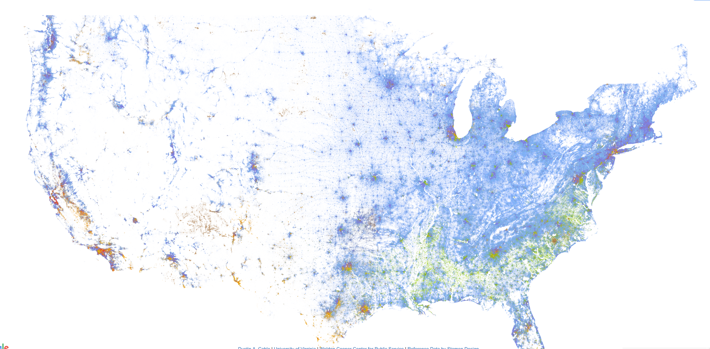
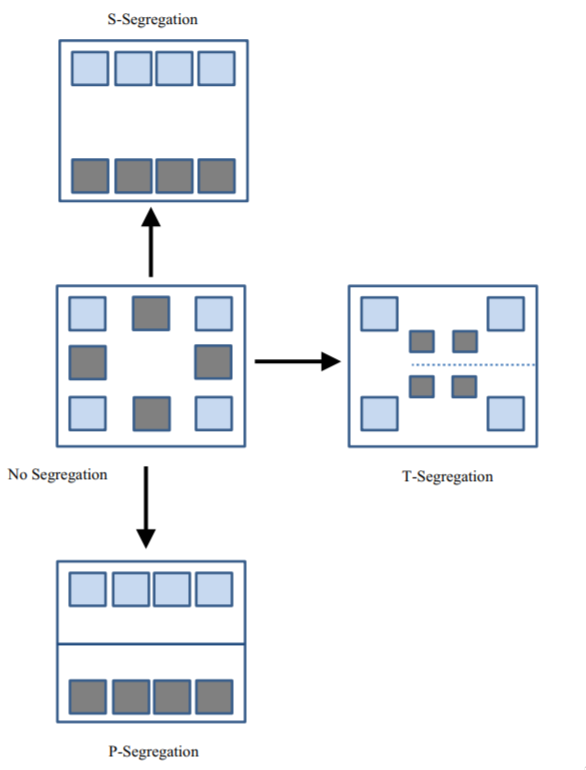
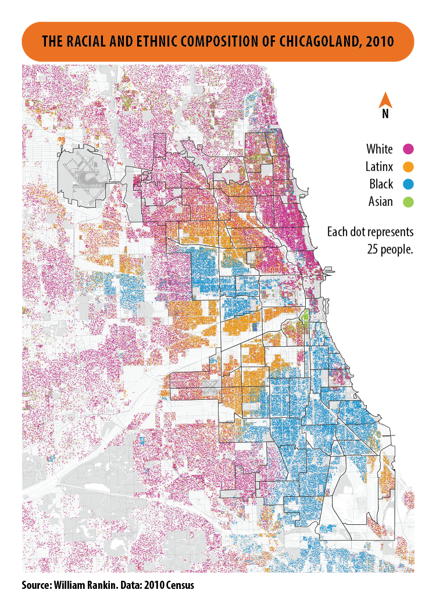
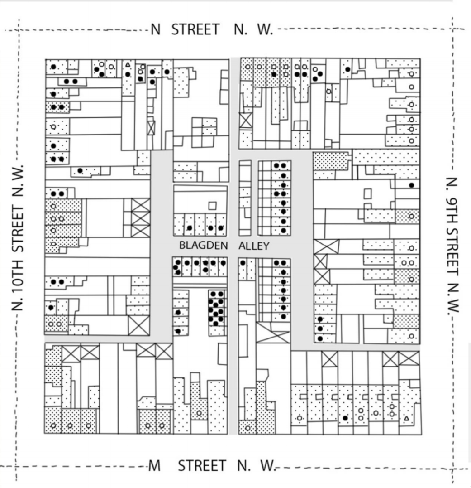
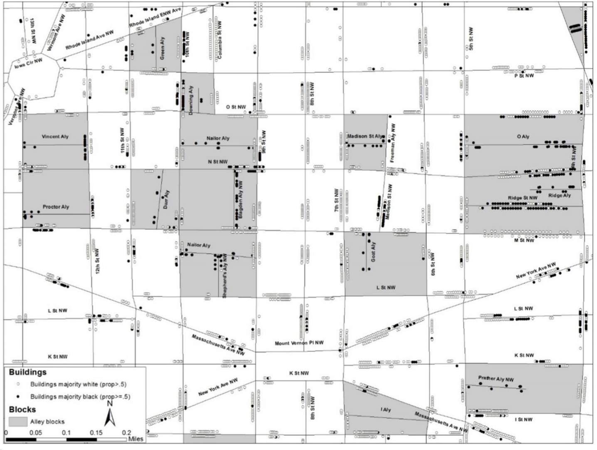
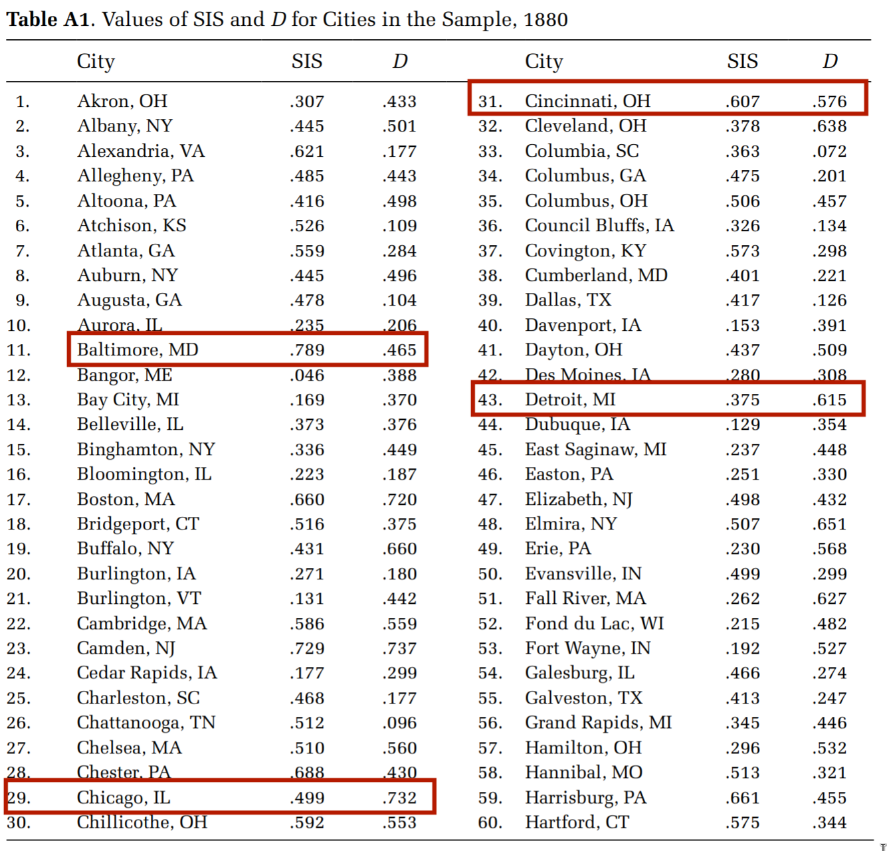
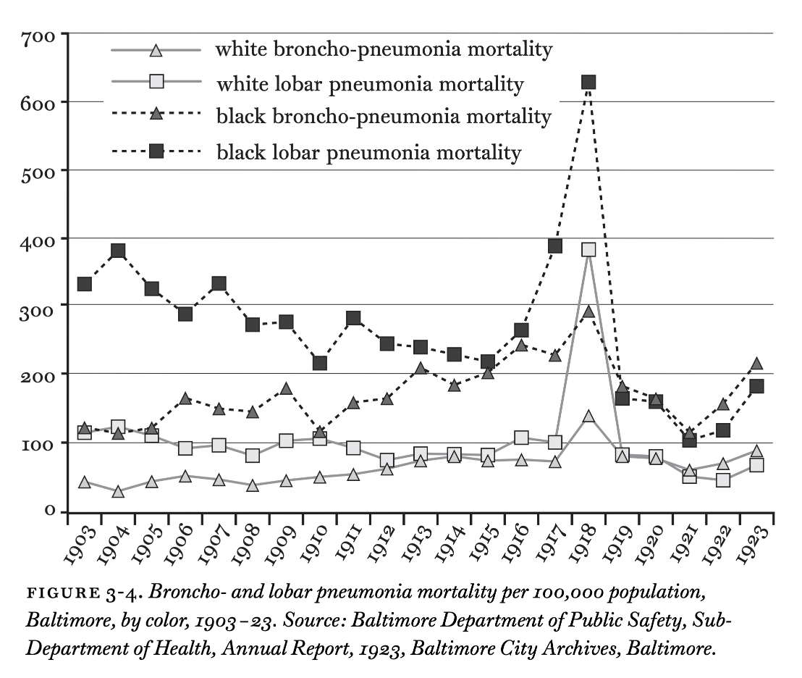
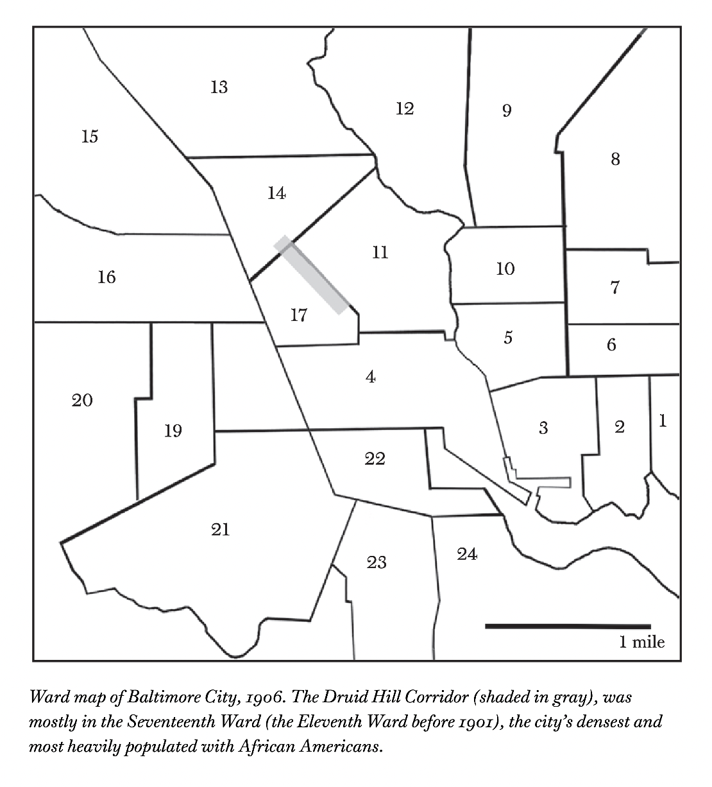

05:00
Looking out at the Landscape of Health
PUBHLTH 405
Social History of Infectious Disease
University of Michigan School of Public Health
Jon Zelner
jzelner@umich.edu
epibayes.io

Predisposition is the handmaiden of scientific racism in public health

“Particularly with regard to consumption it must be remembered that Negroes are not the first people who have been claimed as its peculiar victims; the Irish were once thought to be doomed by that disease - but that was when Irishmen were unpopular.” -W.E.B. Du Bois, The Philadelphia Negro, 1899
Agenda
Finishing up discussion of initial chapters
Digesting Chapters 3 & 4 (35m)
A little more detail about residential segregation.
Preview of next time.
Presentation Schedule
Day 1: 10/28
Malaria 1
Plague 1
Polio 1
STIs
Day 2: 10/30
Malaria 2
Plague 2
Polio 2
What is residential segregation?
How would you define residential segregation?
“Racial residential (i.e., housing) segregation is one of the most pervasive patterns in American metropolitan areas and a powerful engine of racial stratification. Whites and blacks are separated into different residential neighborhoods with markedly different resources to support health and well-being over the life course.” (Acevedo-Garcia and Osypuk 2008)
At a general level, residential segregation is the degree to which two or more groups live separately from one another, in different parts of the urban environment. This general understanding masks considerable underlying complexity, however, for groups may live apart from one another and be “segregated” in a variety of ways. (Massey and Denton 1988)
Alley houses in Baltimore reflected a unique mode of segregation
“In the lower-rent alleys between these two avenues could be found poorer blacks, who resided in one- or two-story houses whose front steps in many cases were separated from the opposite house by no more than six or eight feet of cobblestone or dirt.” (Roberts 2009)
Residential segregation is a multi-scale phenomenon

What are the dimensions of residential segregation?
Some canonical definitions from (Massey and Denton 1988):
- Evenness
- “Minority members may be distributed so that they are overrepresented in some areas and underrepresented in others, varying on the characteristic of evenness.”
- Exposure
- “[Minority group members] may be distributed so that their exposure to majority members is limited by virtue of rarely sharing a neighborhood with them.”
- Concentration
- “They may be spatially concentrated within a very small area, occupying less physical space than majority members.”
- Centralization
-
“They may be spatially centralized, congregating around the urban core, and occupying a more central location than the majority.”
- Clustering
-
“[A]reas of minority settlement may be tightly clustered to form one large contiguous enclave, or be scattered widely around the urban area.”
Do any of these describe the patterns of segregation described in Infectious Fear?
Segregating processes can lead to different spatial patterns
(Grigoryeva and Ruef 2015) define three types of segregation:
- Primary (P)
- Separation of groups across administrative or political boundaries.
- Secondary (S)
- Separation over large-scale physical space.
- Tertiary (T)
- Function of residential street layout that influence pedestrian paths.
A Typology of Segregation
Clearly-defined primary segregation
Fine-scale residential segregation in Washington, D.C. (1888)
Sanborn Fire Insurance Company Map for Washington D.C. in 1888
Pattern was pervasive throughout D.C. and Baltimore
Map of a larger area of DC
What are potential implications of these different modes of segregation for infection risk?
So: How do we measure this type of segregation?
Classic approach, e.g. (Massey and Denton 1988), only captures primary segregation.
Grigoryeva & Ruef noticed that information could be extracted from the order in which 19th century census takers visited houses. (Grigoryeva and Ruef 2015)
Data were recorded sequentially in their records as they went 🏠 to 🏠.
Compared observed sequences of black and white households to a random distribution to measure the extent of tertiary segregation.
Called their measure the Sequential Index of Segregation (SIS)
Different measures \(\to\) different answers
D = index of dissimilarity, a measure of evenness
What do you think this implies for how we should approach the measurement/characterization of segregation?
Assessing the Landscape of Health in Baltimore
Snowball ☃️ discussion about Chs 3 & 4
Spend a few minutes on your own, thinking about and adding a quick response to what struck you most about the readings.
Pair up and discuss the next question.
Join pairs into groups of 4 for the next discussion.
Groups of 6-8 for final question.
⏲️ On your own
Spend a few minutes going back over the text and put your answers to these questions in this google doc:
What is Roberts referring to when he describes the landscape of health in Chapter 3?
What were you most confused or surprised about in these chapters?
What struck you as most important?
In pairs
Focusing on Chapter 3, what does the discussion in this chapter add to our understanding of how segregation and racism act as fundamental causes of health inequality?
What other diseases - infectious and non-communicable - were linked to racial residential segregation and living conditions during the late 19th and early 20th centuries?
How does this information support - or not - the role of racism and SES as fundamental causes in TB disparities?

08:00
In groups of four
What are the push and pull factors that Roberts invokes to exlpain the emergence of the Druid Hill Corridor as a Black ghetto characterized by intense segregation and high rates of TB and other infectious diseases?
In chapter 4, what similarities and differences did you see been infected house theory and the miasmatic theories discussed in The Ghost Map?
- What were some surprising implications of infected house theory for public health surveillance and intervention?

10:00
In groups of 6-8
Return to your initial reflections:
What emerged from your conversations that added to your understanding or thoughts about these chapters?
What do you remain confused or unsure about?
Drop a comment on any items you think have been resolved/added to through your discussions.
05:00
Next Time
Putting ✨ finishing touches ✨ on your project whitepapers due 10/16.
Warning
This will be time for finishing, rather than starting. In an ideal world, your paper will be good enough to hand in when you get to class, but really clean and polished by the end of class!
References
Acevedo-Garcia, Dolores, and Theresa L. Osypuk. 2008. “Residential Segregation and Health—The Complexity of Modeling Separate Social Contexts.” American Journal of Epidemiology 168 (11): 1255–58. https://doi.org/10.1093/aje/kwn290.
Grigoryeva, Angelina, and Martin Ruef. 2015. “The Historical Demography of Racial Segregation.” American Sociological Review 80 (4): 814–42. https://doi.org/10.1177/0003122415589170.
Lichter, Daniel T., Domenico Parisi, and Michael C. Taquino. 2015. “Toward a New Macro-Segregation? Decomposing Segregation Within and Between Metropolitan Cities and Suburbs.” American Sociological Review 80 (4): 843–73. https://doi.org/10.1177/0003122415588558.
Massey, Douglas S., and Nancy A. Denton. 1988. “The Dimensions of Residential Segregation.” Social Forces 67 (2): 281–315. https://doi.org/10.2307/2579183.
Roberts, Samuel K. 2009. Infectious Fear: Politics, Disease, and the Health Effects of Segregation. University of North Carolina Press.